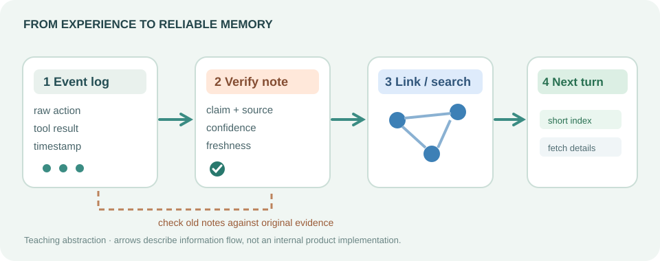
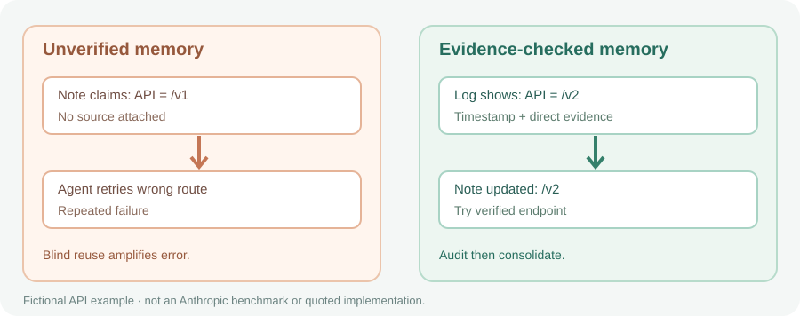
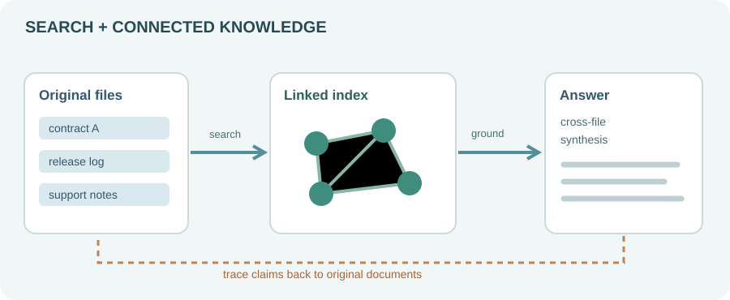
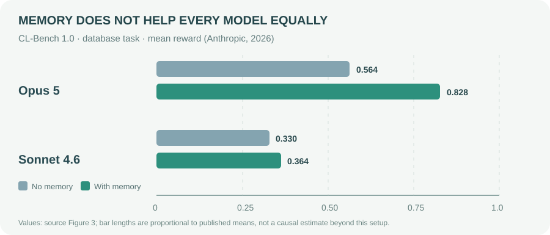

AGENTS / MEMORY · ENGINEERING DEEP DIVE
Understanding Agent Memory
智能体需要记住的，并不是所有发生过的事情。它真正需要的是：可核对的经验、适时可检索的知识，以及一份足够小的下一次行动提示。
01 · 为什么让 Agent “全都记住”反而会出错？
想象一个跨越三十次会话的软件维护智能体。第一天它读到旧 API 使用 /v1；第五天团队改成 /v2；第六天它仍按旧笔记重试失败。问题不是“它没有记忆”，而是记忆把已失效的事实包装成了可信指导。
普通对话的上下文会随着窗口结束而丢失；持久记忆则能跨会话保存，但引入三个新问题：哪些事件值得写入？旧记忆如何被纠正？下一次会话应该预先加载多少？Anthropic 在 2026 年 11 月的工程文章中，用 CL-Bench、游戏和知识库检索等实验探索这些问题。[1]
02 · 四层记忆：从事件日志到下次会话
原文讨论了一个有层次的设计：底部保留transcripts（可搜索的事件原始记录）；其上是模型写下的memory notes（精炼事实与策略）；更上一层是knowledge representations（如相互链接的 wiki）；最顶部是会在未来会话启动时注入的简短上下文。原文的“dreaming”会在会话间利用计算整理这些材料。[1]

| 层 | 负责回答的问题 | 典型内容 | 最容易犯的错 |
|---|---|---|---|
| 日志 transcripts | “实际发生了什么？” | 时间、工具输出、操作结果 | 海量冗余，检索成本高 |
| 笔记 notes | “以后可能用到什么？” | 已验证规则、失败原因 | 早早写入错误假设 |
| 索引 / wiki | “知识之间如何相连？” | 主题页、链接、溯源 | 索引变成比原文还长的副本 |
| 注入上下文 | “下一轮应该先知道什么？” | 当前目标、关键约束、检索入口 | 超长、陈旧、抢占上下文预算 |
关键并不是让四层越大越好。日志可以详细，预加载区域必须克制。原文提到 Claude Code auto memory 的 MEMORY.md 首部加载限制，用索引指向更多材料，而不是全部塞进每次会话。这个产品实现细节有版本范围，不应泛化成所有 Agent 的统一标准。[1]
03 · Dreaming：把“想起来”升级为“核对过”
写记忆时，Agent 只能根据当下已看到的证据判断价值。等任务往前走，它可能发现先前理解不对。所谓 dreaming，在这里不是模型睡觉或更新权重，而是利用会话间计算回看记录、找出矛盾、修正笔记、合并重复知识。

原文中的实际案例
Anthropic 报告了一次 Pokémon Red 导航案例：Agent 对某处地点位置有错误记忆，反复走错；离线校验后，系统根据会话日志修正了该笔记，在对应试验运行中成功继续前进。作者还报告：使用 corrected memory 的一次运行在累计第 1,935 个动作抵达目标城市，未修正记忆的运行则未能抵达。[1, Figure 8]
这说明“错误记忆的修正”在这个测试中很重要；它并不证明任何系统只要增加 dreaming 就会普遍变聪明。任务难度、模型版本、评价方法、生成笔记成本都会影响结果。
04 · Wiki 是地图，不是另一份全文拷贝
原文还研究了把分散资料整理为相互链接的 wiki。当问题需要综合多份文件，链接关系可以为搜索提供更好的路线；当答案几乎都在一个文件里时，直接搜索可能足够。[1]

研究者在一组约 35 万个文件、约 4.2 亿 tokens 的资料上测试，逐步建设 wiki；在作者报告的 25 道题设置中，结合搜索与不断增长的 wiki，达标比例由 54% 增至 61%，单独搜索约为 53%；这些都是特定测试及计分口径，不是普适的 RAG 提升率。另一个测试中，wiki 内容甚至超过源文件体积，成为“没有真正压缩的知识地图”。[1, Figures 10–12]
因此两种常见错误同样值得避免：只做模糊总结、缺少原文引用；以及为每段原文都建一个近似副本，以致维护成本高于直接搜索。
05 · 怎么用简单数学理解记忆的取舍？
Anthropic 的原文没有提出下面的通用数学定律。以下是帮助工程设计决策的教学目标函数，用来解释为什么“存得越多越好”不成立。
这里 m 是候选记忆；p_reuse 是未来真的用到它的概率；B 是正确复用带来的收益；C_read 是占用 token、检索与理解成本；C_stale 是过时记忆造成误导的预期代价；C_maint 是校验与更新成本。四个项可以用统一效用单位估计，也可以只作排序的概念框架。
一个可手算的例子
假设某条“部署流程已验证”笔记有 0.6 的机会在未来用到，一次正确复用值 10 个任意效用单位；读取、失效和维护的预期成本分别是 1、3、1。那么其教学净效用为 0.6 × 10 − 1 − 3 − 1 = 1。如果同一条笔记经常过时，使失效代价升到 6，则净效用变成 −2。此时更合理的方案可能不是永久注入，而是保留一个“每次先查询当前部署配置”的索引。
上述数字全部为自构示例；不能据此推断 Anthropic 产品如何打分或调度 dreaming。
06 · 论文式严谨性：给工程实验标清边界
原文是团队工程文章而非同行评审的正式论文。下面只列出可以直接从其图注及正文核对的两个模型在 CL-Bench 1.0 数据库任务中的平均奖励；“有记忆”指实验允许跨会话访问持久 memory directory，不能简单理解为同一模型参数发生训练更新。[1, Figure 3]

| 模型（原文命名） | 无记忆 | 有记忆 | 绝对变化 |
|---|---|---|---|
| Claude Opus 5 | 0.564 | 0.828 | +0.264 |
| Claude Sonnet 4.6 | 0.330 | 0.364 | +0.034 |
另一个原文实验使用 Pokémon Red 来观察哪些信息值得记住。作者描述：某旧模型倾向保存大量原始经历，而更强的模型维护较精炼的策略、目标和路径笔记。两种做法对应不同模型与单次运行，因此不能仅凭记忆文件数量直接推断因果。[1, Figures 4–5]
07 · 一步步体验：修复错误笔记
下面的交互完全是自构教学模拟：假设内部工具文档版本已更改，旧笔记仍指向老接口。按“下一步”查看 Agent 如何从存储笔记、读取原始日志到确认修订。即使 JavaScript 不运行，四步逻辑也保留在下面。
0 / 4 · 待核对
初始状态：已有笔记声称接口路径为 /v1，尚未完成来源核验。
- 读取历史笔记，发现可能过时的接口说明。
- 定位较新的工具日志，日志包含
/v2已启用的记录。 - 记录冲突、对比来源日期，修订笔记并保存证据指针。
- 未来会话只预加载“接口详情请检索最新版配置”的提示。
一个可以离线运行的简化 Python 示例与确定性测试见仓库本目录的 memory_demo.py、test_memory_demo.py；它演示验证流程，不复现 Anthropic 的产品。
08 · 工程实践：何时写、何时查、何时不记
| 设计决策 | 建议做法 | 失效信号 |
|---|---|---|
| 何时保存 | 保存用户允许保留的偏好、验证过的规则、关键失败教训 | 对每次点击和短暂状态都建档 |
| 如何关联 | 笔记保留来源、时间、上下游关系；大型知识库结合搜索 | 知识索引失去可追溯来源 |
| 何时校验 | 状态敏感、反复出错、过期概率高的记忆优先核对 | 错误规则跨会话复用 |
| 如何注入 | 短小的当前目标与索引；其他信息按需检索 | 固定注入内容占满上下文 |
| 怎样删除或更新 | 明确版本、过期策略、权限边界和撤回机制 | 内容错误、过期或应被忘记 |
不要把这套流程理解为“必须有一个独立 dreaming 模型”。定时离线复核、任务结束时整理、检索前校验、人工审查都可以实现类似目标；关键是对实际环境、成本、权限、隐私及可验证性的权衡。
阅读路径：先看 ReAct 的 Thought–Action–Observation 如何产生操作轨迹，再看 SWE-agent 的 ACI 如何提供可靠工具反馈，最后理解哪些轨迹值得跨会话保存。
09 · 原始资料与延伸阅读
- Lance Martin, “The components of agent memory,” Anthropic Engineering, 2026-11-06。本文的主来源；模型、图号、实验指标均以原文为准。
- “Effective harnesses for long-running agents,” Anthropic Engineering, 2025-11-26。跨上下文窗口的代理工作交接；与长期知识库记忆不是同一概念。
- “Scaling Managed Agents: Decoupling the brain from the hands,” Anthropic Engineering, 2026-04-08。Session、Harness 与 Sandbox 的系统边界。
- Yang et al., “SWE-agent: Agent-Computer Interfaces Enable Automated Software Engineering,” 2024。Agent 执行动作与观察的研究背景。
资料声明：本文的经验性论断、实验数值来自注明的一手来源；图 1–4、示例 API、净效用公式与交互模拟为独立教学构造，不表示原作者的产品实现，也不暗示经过同行评审。